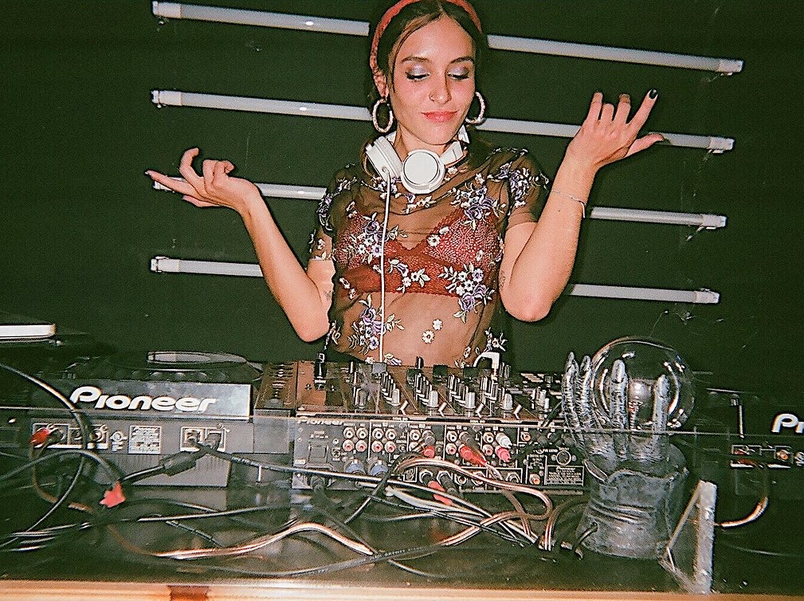

Some years ago, I had a band with which I made very beautiful music. I was the lead singer and the drummer.
It was described as “the most saccharine set of pop-punk tunes to ever grace my ears in such a long time” by Jimmy, as “simple punk with melodic leads and a sorta snotty woman singer” by Richter Scale Records, as “Punk with popish melodies to tap your feet to” by Maximum Rocknroll and as “música borrosa” by Yire. You can listen to it here. I’d be very happy to find the time and the people to play music again.
Sometimes, I DJ in my free time. I like high energy music.
These are some of my mixes. You can listen to more in my Soundcloud.